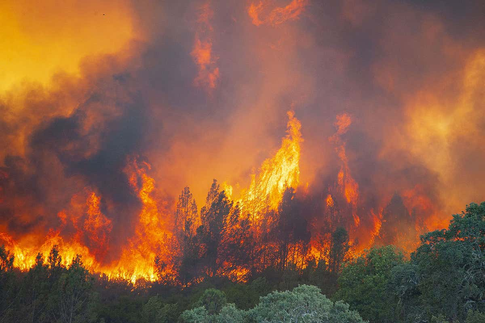
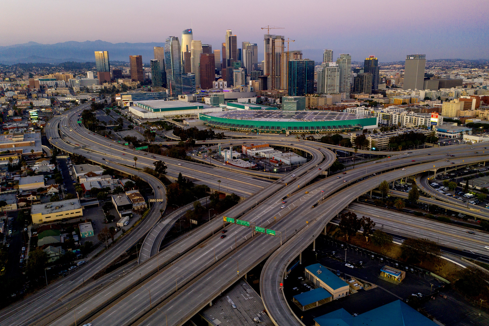
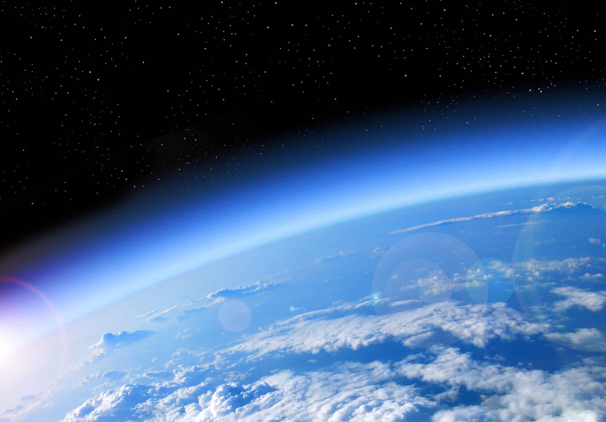

Los Angeles, commonly referred to by the initials L.A., is a sprawling Southern Californian city. Being the largest city in California, Los Angeles has an estimated population of almost 4 million. Los Angles is known world wide for being the entertainment capital of the world- it’s the epicentre for film and television. The city is also known for its notorious air quality. The dangerously poor air quality in Los Angeles has been an ongoing issue for decades now. This site’s purpose is to bring awareness to some of the major factors contributing to the air pollution in L.A., as listed below:
Los Angeles is suffers from natural forest fires. These fires go two ways- they run their course and burn out within a matter of hours, or they take on a life of their own and engulf dozens of cities in the Southern Californian region.
Los Angeles differs from other populous cities -like New York, for example- in that it has a huge car culture. This crazed culture comes from the fact that L.A. is a metropolitan area, and the county is about 4,700 miles wide.
The Los Angeles region is susceptible to high ozone layers. Ozone is considered to be a reactive gas that is produced when the sun rays split oxygen molecules.
